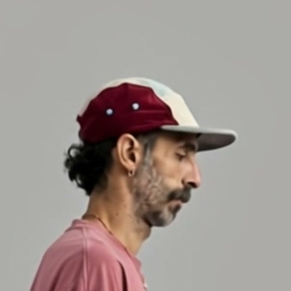

Your character walks - stage 2
Plnty, Kling Omni Std. Your real measured step, worn by the run 01 character. 126 credits spent, balance 4,839. One earlier attempt failed inside Plnty and was refunded.
Your walk next to the character
- Same step, same timing: one step = 0.667 s in your footage and in the result, measured
- Cap, plain pink tee, light grey jeans, cream clogs held for the whole 5 seconds
- Walks in place on grey, camera locked: ready to be cut out and placed in the four worlds
One step, looped 12 times
- The join between loops is smaller than the change between two ordinary frames, so it should not show
- A dark band at the back ankle in some frames, like a sock. Watch the back foot
Face close-up (frame 40)

- Head tilts down to the floor. That comes from your footage, not from Plnty
Independent QA: PASS with fixes (ankle band, slight shadow on the floor that the cutout must handle)
How it was made (54 s)
Both Plnty screen recordings, sped up, with the runs and the result. The first cut of our process film.